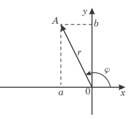
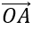
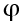
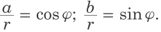
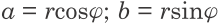
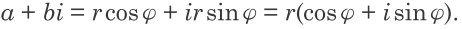

Kompleks sanlar
Kwadraty –1 bolan sany i harpy bilen belgilemek we hyýaly birlik diýip at bermek kabul edilendir. Diýmek, i sanyň kesgitlemesine görä i2 = –1.
«Kompleks» sözi türkmençe «çylşyrymly», «düzümli» manysyny berýär. a + bi ( bu ýerde a we b–erkin hakyky sanlar,i bolsa hyýaly birlik) görnüşinde bolan sana bu ady ilkinji gezek nemes matematigi Gauss (1777–1855) beripdir. a sana a+bi kompleks sanyň hakyky bölegi, bi aňlatma onuň hyýaly bölegi diýip atlandyrmaklyk kabul edilendir.
Kompleks sanlaryň üstünde amallar
Kesgitleme: a + bi we c + di iki kompleks sanyň jemi diýip (a + c) + (b + d)i kompleks sana aýdylýar:
(a + bi) + (c + di) = (a + c) + (b + d)i.
Kesgitleme: z1 = a + bi we z2 = c + di iki kompleks sanyň tapawudy diýip z2 bilen goşulanda z1 berýän z3 = x + yi kompleks sana aýdylýar:
(a + bi) – (c + di) = (a – c) + (b – d)i.
Kesgitleme: a + bi we c + di iki sany kompleks sanyň köpeltmek hasyly diýip,
(ac – bd) + (ad + bc)i kompleks sana aýdylýar.
Kesgitleme: z1 kompleks sany z2 kompleks sana bölmekden alnan paý diýip, z2-ä köpeldilende z1-i berýän z3 kompleks sana aýdylýar.
Hyýaly birligiň derejeleri. Otrisatel sanlardan kwadrat kök almak.
Kesgitlemä görä, i sanyň birinji derejesi i sanyň özüdir,
onuň ikinji derejesi bolsa –1 sandyr: i1 = i, i2= –1.
i sanyň has ýokary derejeleri aşakdaky ýaly tapylýar:
i3 = i2 ∙ i = –1 ∙ i = –i,
i4 = i3 ∙ i = –i2 = 1;
i5 = i4 ∙ i = i,
i6 = i5 ∙ i = i2 = –1
Kompleks sanlaryň ýazgysynyň trigonometrik görnüşi.

Goý, a + bi kompleks sana koordinatalary (a, b) bolan  wektor degişli bolsun. Bu wektoryň uzynlygyny r bilen, onuň ox oky bilen emele getirýän burçuny  bilen belgiläliň.Sinusyň we kosinusyň kesgitlemesine görä:

Bu ýerden

Soňky aňlatmalary ulanyp, a + bi kompleks sany indiki görnüşde ýazmak bolar:

r sana a + bi kompleks sanyň moduly, burça bolsa,onuň argumenti diýilýär.